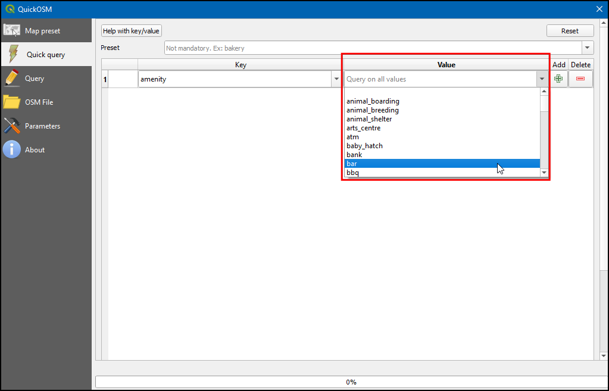
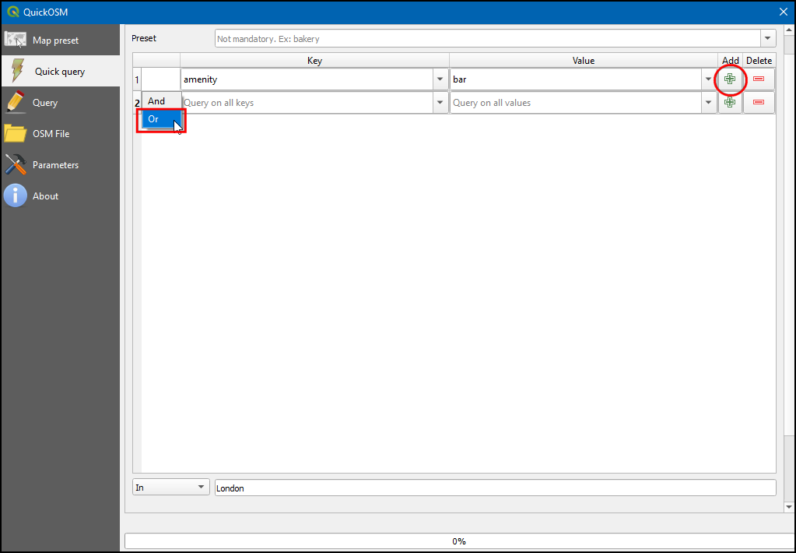
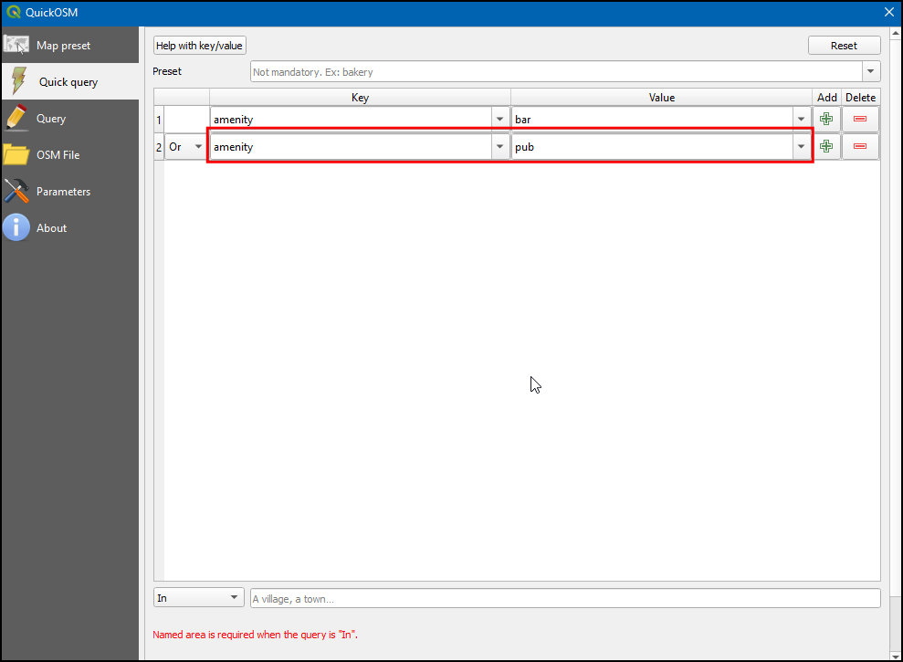
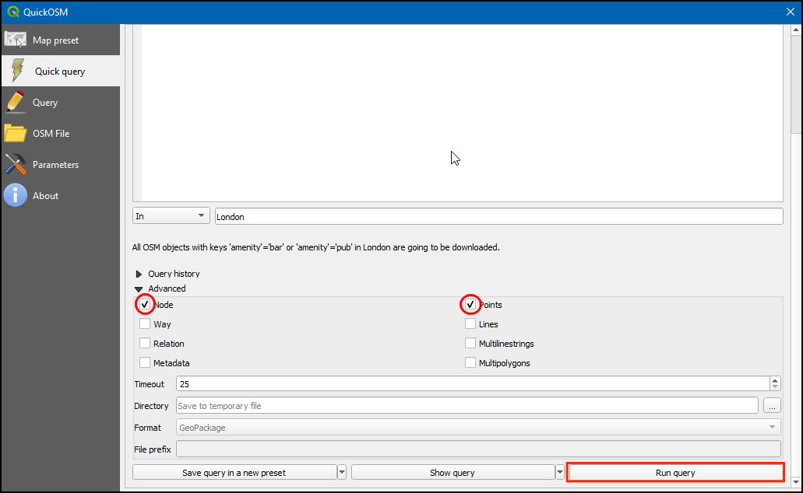
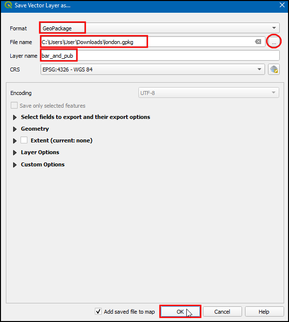
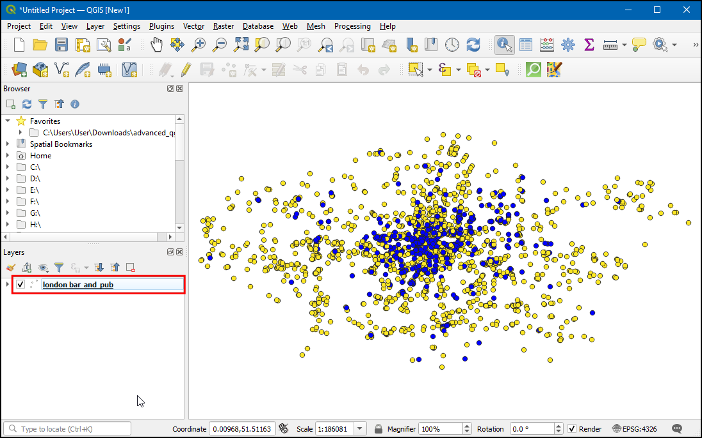

Ujaval Gandhi
Ujaval GandhiSuche und Download von OpenStreetMap Daten (QGIS3)¶
Hochwertige Quelldaten sind essentiell für alle GIS-Anwendungen. Eine großartige Quelle für freie und offen lizenzierte Daten ist OpenStreetMap(OSM) . Die OSM-Datenbasis enthält ganz verschiedene Typen kartographischer Daten: Straßen, lokale Daten, Gebäudepolygone, administrative Grenzen usw. Der Zugriff auf OSM-Daten in einem GIS-Format ist in QGIS mit der Erweiterung QuickOSM möglich. Diese Anleitung beschreibt die Suche, den Download und die Verwendung der Erweiterung.
Überblick über die Aufgabe¶
Wir werden den Standort aller Bars und Pubs in London aus der OpenStreetMap Datenbasis extrahieren und ihn in einem Vektorlayer abspeichern.
Weitere Fähigkeiten, die wir erlernen¶
Verkettung mehrfacher Anfragen im Plugin QuickOSM.
Arbeitsablauf¶
Wir suchen das Plugin QuickOSM im offiziellen Plugin Repository von QGIS und installieren es (siehe Verwenden von Erweiterungen für Hinweise zum Download von Plugins). Es sollte sichergestellt sein, dass die Checkbox ausgewählt ist. Anschließend klicken wir auf Schließen.

Wir starten die Erweiterung nach der Installation unter .

Im Reiter Schnelle Abfrage können wir einen Filter setzen, um eine Teilmenge auszuwählen. Die Attribute der Kartenfeatures in der OSM-Datenbank sind als Tags gespeichert. Tags werden durch einen Schlüssel und einen Wert repräsentiert. Der Schlüssel ist ein Themengebiet, und der Wert hat eine bestimmte Form. Auf der Seite Map Features des OSM-Wikis findet man eine umfassende Liste an Tags für verschiedene Feature-Typen. Bars nutzen den Tag
amenity:barund Pubs den Tagamenity:pub. Wir werden als Erstes die Bars extrahieren. Wähleamenityals Schlüssel aus dem Drop-Down Menü.

Wähle
baraus dem Drop-Down Menü Wert.

Seit der letzten Version (v2.0.0 +) des QuickOSM-Plugins können mehrfache Abfragen verkettet werden. Mit Klick auf den +-Button wird eine neue Zeile für eine neue Abfrage angezeigt. Ein Klick in die erste Auswahl-Box kann zwischen den Optionen
And(logisch UND) undOr(logisch ODER) umschalten. And wird nur solche Features auswählen, für die alle Abfragenwahrsind. Or wird alle Features auswählen, für die mindestens eine der Abfragenwahrist. Um sowohl Features für Bars als auch für Pubs auszuwählen, benutzen wir die OptionOr.

Wir wählen
amenityals Schlüssel aus dem Drop-Down-Menü und anschließendpubaus dem Drop-Down-Menü Wert.

Gib
Londonim Feld In ein, um die Suche auf die Stadtgrenze zu beschränken.

Klappe den Bereich Fortgeschritten auf. Im OSM-Datenmodell werden Features durch nodes, ways and relations repräsentiert. Da uns nur die Punkt-Features interessieren, wählen wir
NodeundPoints. Klicke auf Ausführen.

Sobald die Abfrage ein ergebnis geliefert hat, kehren wir zum QGIS-Hauptfenster zurück. Dort wird ein neuer Layer mit dem Namen
amenity_bar_londonim Bereich Layer angezeigt. Der Arbeitsbereich zeigt die Lage der Bars und Pubs, die extrahiert wurden.

Wir öffnen die Attributtabelle des Layers. Es sind
2091Features enthalten. Die Spalte amenity enthält die Kategorie, also ob es sich um einenPuboder eineBarhandelt. wir werden jetzt diese Spalte verwenden, um unseren Layer zu gestalten.

Wähle nach dem Klick auf das Icon Layergestaltungsfenster öffnen
Kategorisiertund dort unter Wert die Spalteamenity. Danach klicke Klassifizieren. Der Layer wird nun mit 2 verschiedenfarbigen Symbolen fürBarsundPubsgestaltet.

Klicke nun mit der rechten Maustaste auf den Layer und wähle , um den Layer als GeoPackage zu exportieren.

Wähle im Dialogfenster Vektorlayer speichern als… unter Format
GeoPackage, klicke unter Dateiname...wähle das Verzeichnis, in dem die Daten alslondon.gpkggespeichert werden sollen. Gib unter Layernamebar_and_pubsein und klicke OK.

Nun wird ein Layer
london ̶ bars_and_pubszum Arbeitsbereich hinzugefügt.

If you want to give feedback or share your experience with this tutorial, please comment below. (requires GitHub account)